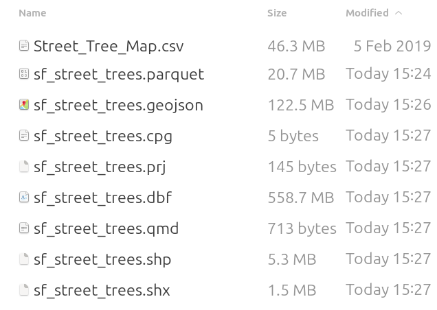
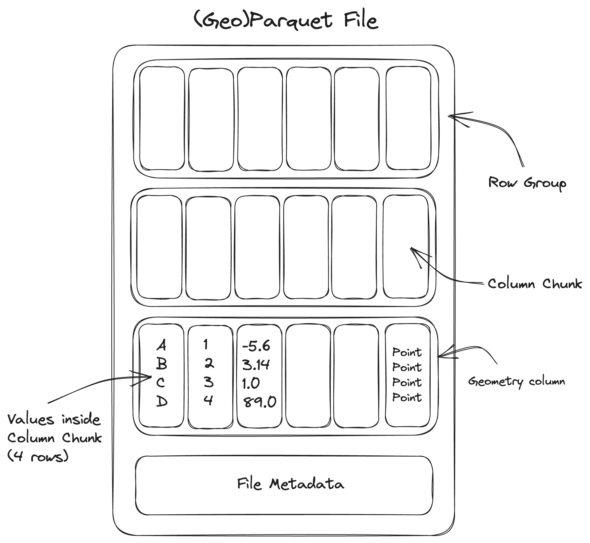
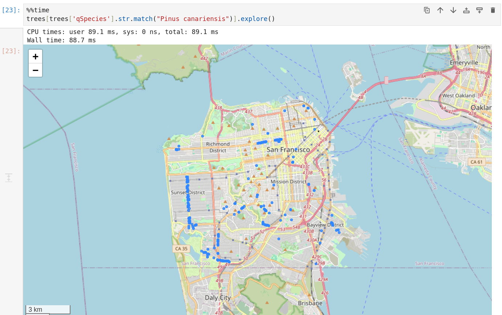

# GeoParquet Alex Mandel | May 2025
## Yet Another Vector Format .parquet - Very fast - Smaller files - Works over the internet too - The world of tomorrow, now! - A bunch of other really technical details ...
### Built in Compression  </img> <p>most vector formats don't include compression</p>
### Cloud Optimization #### Rows vs. Columns  </img> <p style="font-size: small"> Image Credit: <a href="https://guide.cloudnativegeo.org/" >Barciauskas, A et al. 2023. Cloud Optimized Geospatial Formats Guide. CC-By-4.0</a > </p>
### Loading Data ```python trees = gpd.read_parquet("sf_street_trees.parquet") ``` Time: 524 ms ``` trees = gpd.read_file("sf_street_trees.geojson", engine="pyogrio") ``` Time: 7.89 s (191278 rows, 19 columns)
### Selecting Columns ```python pyogrio.read_info("sf_street_trees.parquet") {... 'fields': array(['TreeID', 'qLegalStatus', 'qSpecies', 'qAddress', 'SiteOrder', 'qSiteInfo', 'PlantType', 'qCaretaker', 'qCareAssistant', 'PlantDate', 'DBH', 'PlotSize', 'PermitNotes', 'XCoord', 'YCoord', 'Latitude', 'Longitude', 'Location'], dtype=object), ... 'features': 191278, ... } ``` ``` trees = gpd.read_file("sf_street_trees.parquet", engine="pyogrio", use_arrow=True, columns=['qSpecies']) ``` Time: 204 ms
 </img>
## When - Large amounts of data - Columns are common to operations - Not editing (write once, use many) - Not doing tons of geometry based filters - Working on the Cloud; AWS, GCP, Azure
## How - You need a version of GDAL with Arrow/Parquet support - Complicated ... conda based setups work well - Then QGIS, GeoPandas, DuckDB, etc - A few ways in R, a little rough - Parquet is everywhere in Table based Big Data - ... ArcGIS Pro via DuckDB [posted](https://community.esri.com/t5/etl-patterns-blog/cloud-native-geoparquet-ingest-with-arcgis-pro-3-5/ba-p/1614730) May 14, 2025
## More References - [Cloud Native Zine](https://zine.developmentseed.org) - [Cloud Native Geospatial Formats Guide](https://guide.cloudnativegeo.org/)